Ubuntu 入门操作指南
作者：TeliuTe 来源：基础教程网
四十、 返回目录 下一课Thunderbird 也称“雷鸟”，是一个电子邮件和新闻阅读的客户端；
1、Thunderbird 邮件/新闻
1）点击主按钮，在搜索中输入 thunderbird ，打开程序，或者依次点“主按钮、所有程序、过滤结果、互联网、Thunderbird 邮件/新闻”；
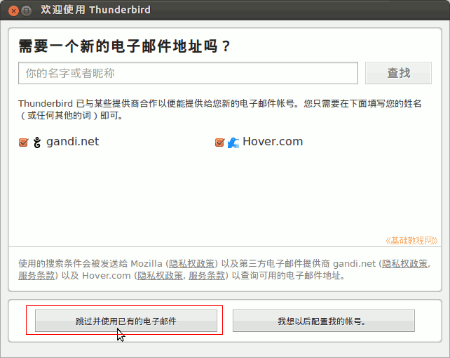
2）点击“跳过并使用已有的电子邮件”，输入自已有的邮箱；
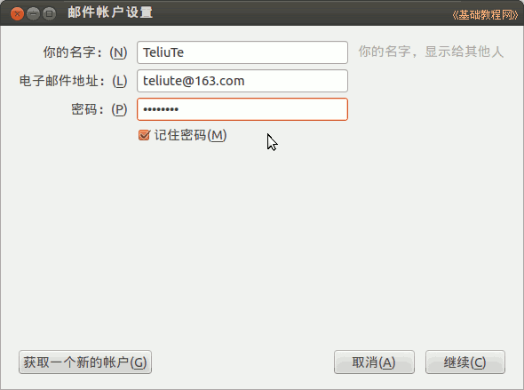
3）点“继续”按钮，自动搜索设置邮箱的信息，选择“pop3(在您的计算机上保留邮件)，点“完成”按钮；
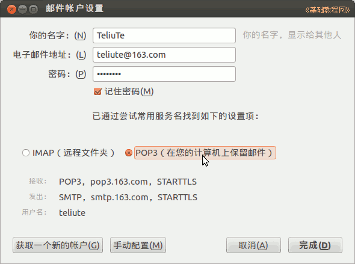
4）在出来的默认客户端对话框中，点“确定”；
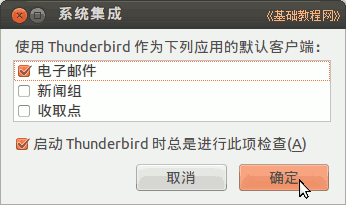
5）点”完成“回到邮箱主窗口，稍等从网络收取邮件，提前在网上把收件箱和废件箱里无用的邮件删除掉；
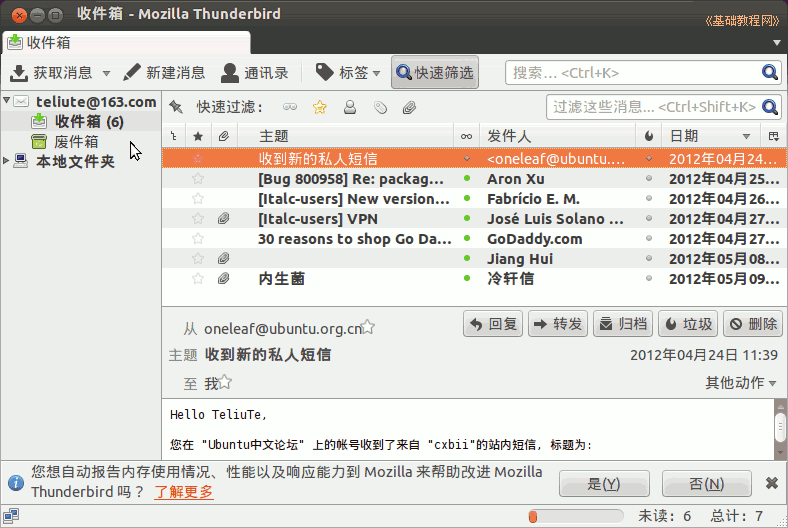
6）邮件列表下有各个操作按钮，双击一个邮件会在新标签打开它；
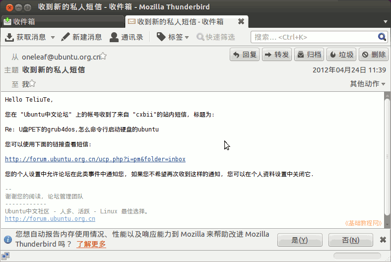
7）点顶部菜单“编辑－帐户设置“，出设置面板，左侧栏中有各个设置项；
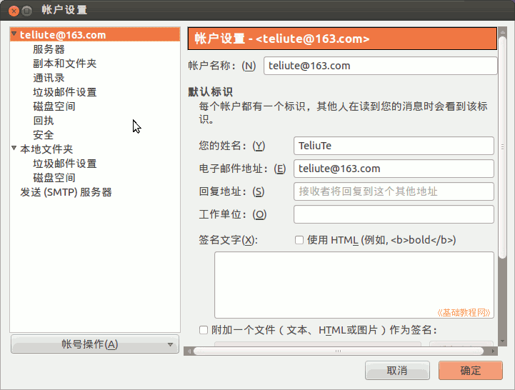
8）点击左侧栏的“服务器”，设置 POP 接收服务器，可以在相应的邮箱网站中查到；
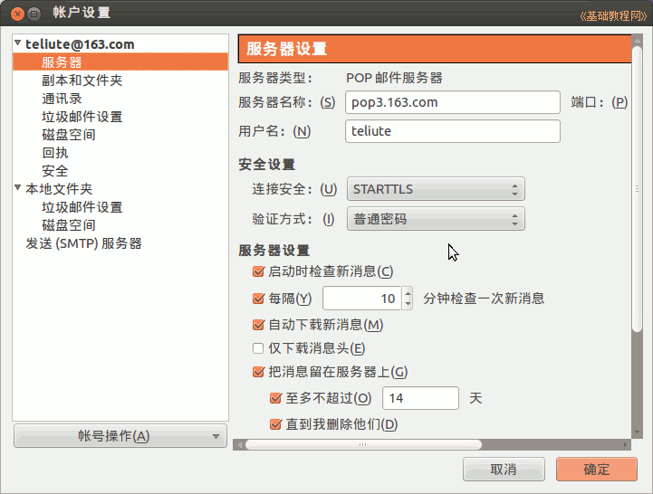
9）在左侧栏下边，点击“发送(SMTP)服务器”，可以编辑发送邮件的 smtp 选项；
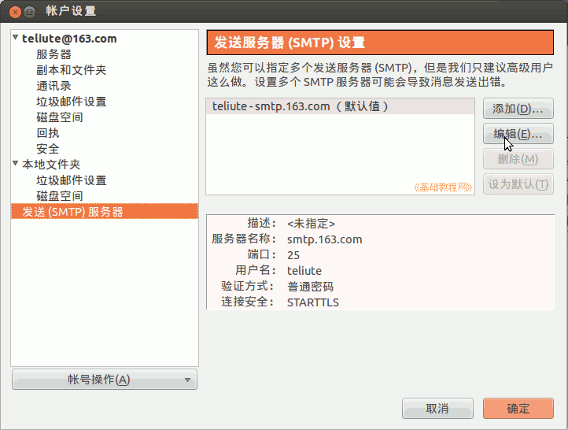
10）点菜单“工具－附加组件“，搜索安装 Enigmail，重启 Thunderbird；
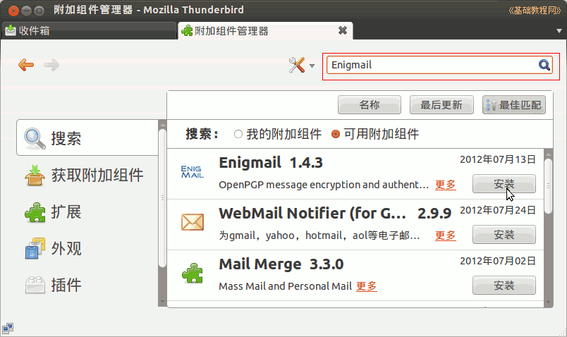
11）在新邮件窗口，点“安全”按钮，打勾“在本邮件中使用 PGP/MIME”和“加密邮件”，就可以用 PGP加密邮件；
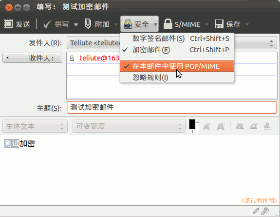
本节学习了Thunderbird 邮件/新闻的基础知识，如果你成功地完成了练习，请继续学习下一课内容；
本教程由86团学校TeliuTe制作|著作权所有
基础教程网：http://teliute.org/
美丽的校园……
转载和引用本站内容，请保留作者和本站链接。